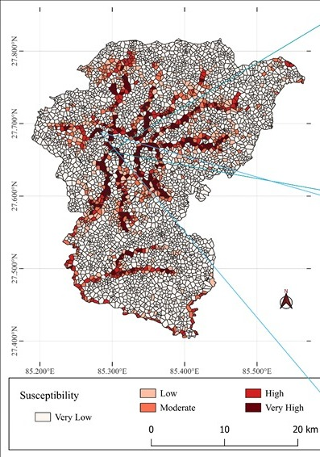
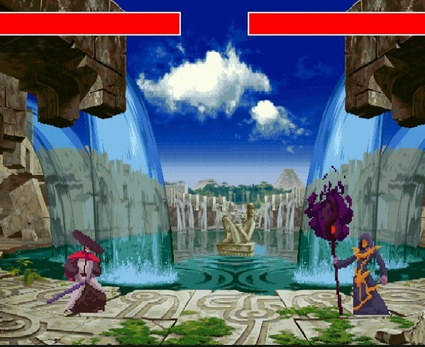

Projects

Flood Susceptibility Mapping (2024)
Developed a deep learning approach for risk assessment and flood susceptibility mapping of Kathmandu Valley using CNN and Random Forest. Focused on urban fluvial flood prediction and mitigation strategies.

Fighting Game (2023)
Designed a Tekken‑like fighting game using Pygame. Implemented character animations, collision detection, and responsive controls for an engaging gameplay experience.